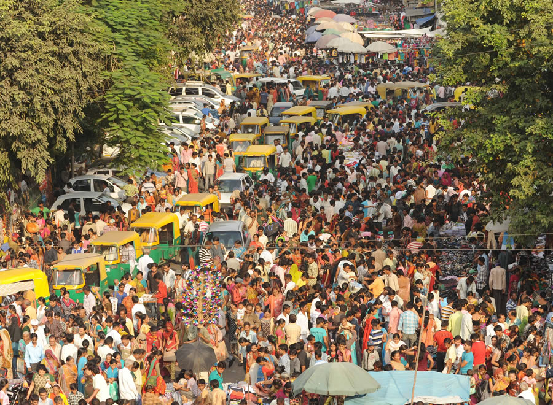
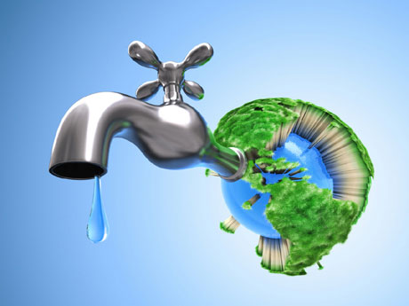
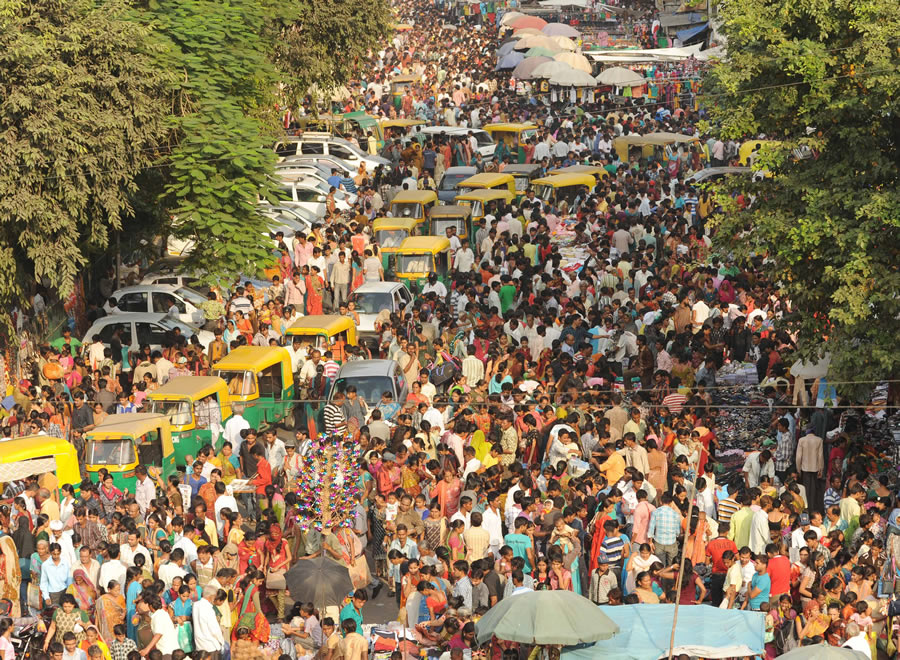
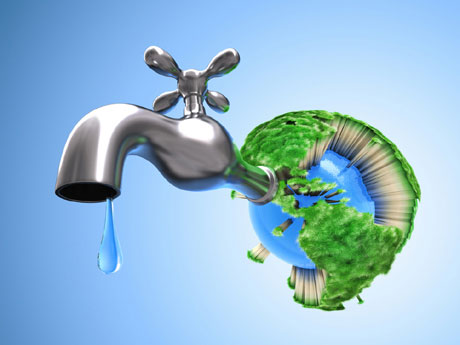
 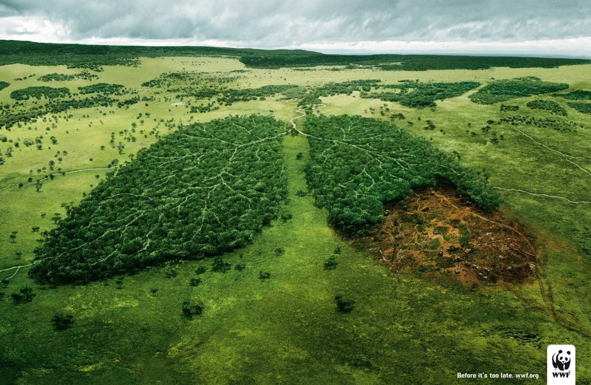
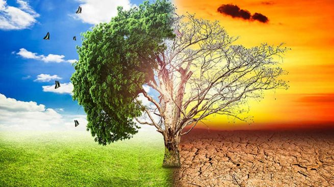
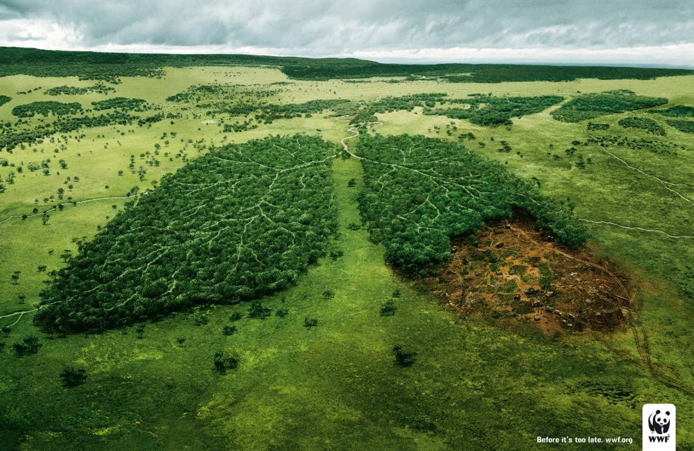
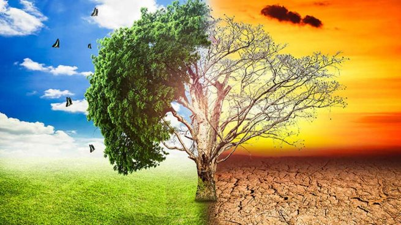
Descubre los desafíos más urgentes y cómo podemos enfrentarlos.
El aumento de la temperatura global está provocando desastres naturales y afectando la biodiversidad.
La superpoblación es el crecimiento excesivo de la población, superando la capacidad del planeta para proporcionar recursos esenciales y generando impactos ambientales y sociales.
El consumo excesivo de agua provoca escasez, contaminación, destrucción de ecosistemas y desequilibrios ambientales, afectando tanto a la naturaleza como a las comunidades humanas.
La contaminación causa daños a la salud, destruye ecosistemas, contribuye al cambio climático y agota recursos naturales como el agua potable.
La deforestación provoca la pérdida de biodiversidad, altera los ecosistemas, contribuye al cambio climático y reduce la capacidad de absorción de CO2.
Hay otros problemas como la necesidad de usar enegías renovables, erradicar la sobrepesca, la gestión de los residuos y la pérdida de biodiversidad.
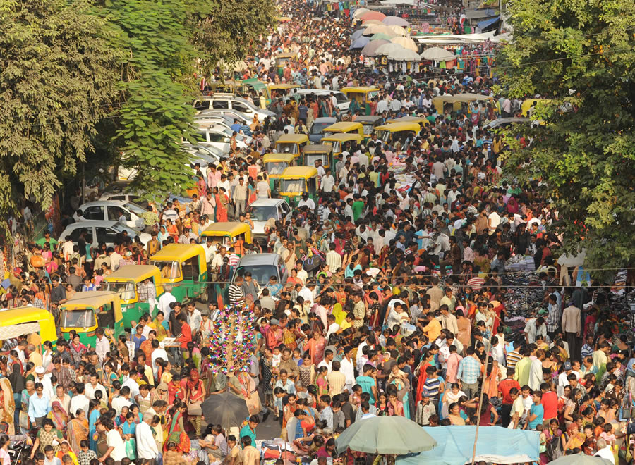
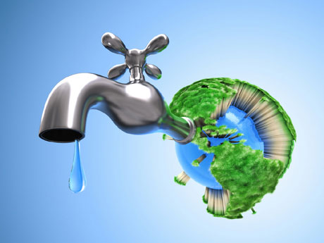
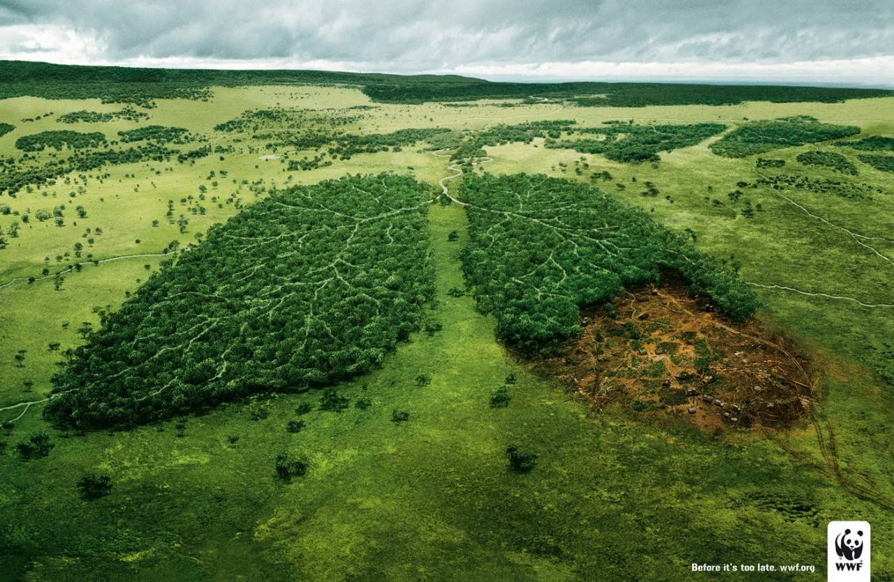
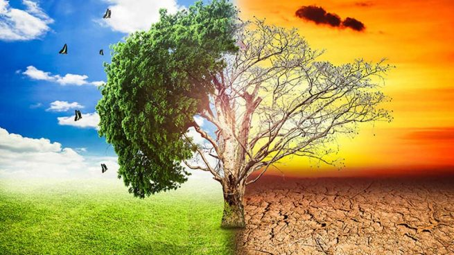